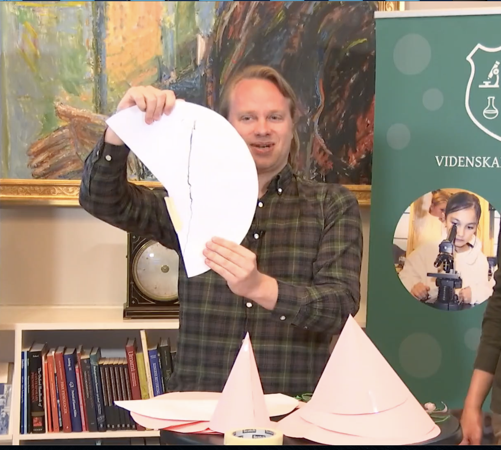

Videnskabsdyst 2021: "De korteste kurver på de sjoveste flader" (video)
- Tid/sted: 5/2021, Videnskabsklubben.dk at Royal Danish Academy of Sciences and Letters (streaming)
- Indhold: Quiz om naturvidenskab for gymnasieelever u/ Forskningens Døgn. Emnet var en eksperimentel tilgang, med snore og lodder, til geodætiske kurver på flader der er lokalt isometriske med planen (cylinder, terning, kegler med varierende topvinkler).
- Links: 1) Video på Videnskabsklub.dk's facebook side (Niels Martin med fra tid 53:03).
2) https://www.videnskabsklubben.dk/videnskabsdyst
|
 |